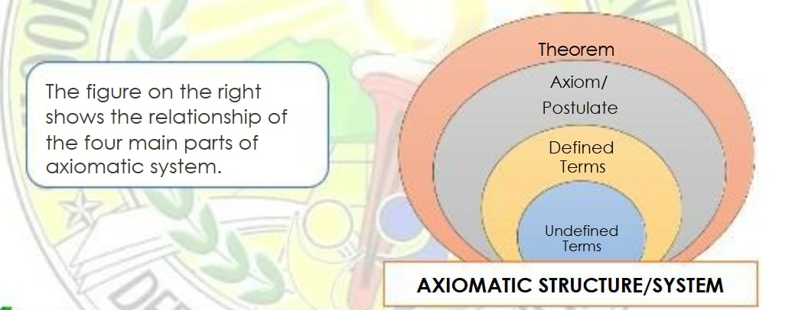
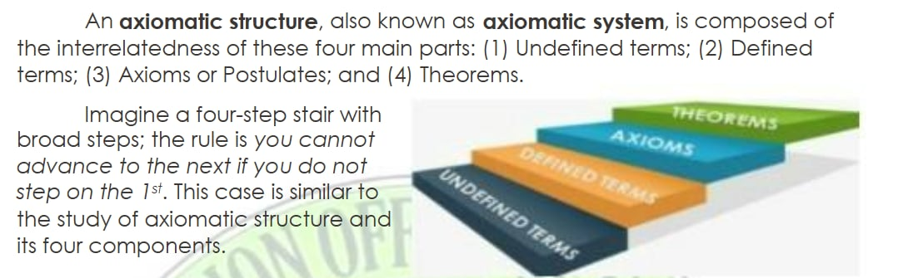

KANE MORAN
WEEK 1 & 2


- A theory is a structure formed from sets of undefined or defined objects and axioms relating these concepts.
- The three undefined terms in geometry are point, line, and plane.
- Defined terms are terms defined based on the undefined terms in geometry. Examples are space, line segment, angles, ray, etc.
- An axiom is a statement which is accepted as true without proof.
- A theorem is a statement that can be proven.
Sources
WEEK 3
- Congruent means that the figures have the same size and shape.
- Two triangles are congruent if their vertices can be paired so that corresponding sides are congruent and corresponding angles are congruent.
- There are six pairs of corresponding congruent parts of two congruent triangles.
Sources
ROVY MABANSAG
WEEK 4
- SAS (Side - Angle – Side) Congruence Postulate - If two sides and an included angle of one triangle are congruent to the corresponding two sides and included angle of another triangle, then the two triangles are congruent.
- ASA (Angle – Side – Angle) Congruence Postulate - If two angles and an included side of one triangle are congruent to the corresponding two angles and included side of another triangle, then the two triangles are congruent.
- SSS (Side – Side – Side) Congruence Postulate - If three sides of a triangle are congruent to the corresponding three sides of another triangle, then the two triangles are congruent.
- AAS (Angle-Angle-Side) Congruence Theorem - If two angles and an included side of a triangle are congruent to the corresponding two angles and included side of another triangle, then the two triangles are congruent.
Sources
WEEK 5
- Two triangles are congruent if and only if their vertices can be paired so that corresponding sides and corresponding angles are congruent.
- Corresponding Parts of Congruent Triangles are congruent (CPCTC) rooted in the definition of congruent triangles. To find the value of the unknown or variable given the two triangles which are congruent, first find all the corresponding parts of the triangle - sides and angles. Next, find what is unknown. Then, perform the appropriate operation to find its value.
Sources
WEEK 6
- Midpoint - is the middle point of a line segment. It is equidistant from both endpoints and divides a segment.
- Segment Bisector - is a geometric figure (a line, a ray or another segment) that divides the line segment exactly in half.
- Angle Bisector - is a line, a ray or a line segment that divides the angle into two equal/congruent angles.
- Perpendicular Bisector (of a segment) - is a line segment perpendicular to and passing through the midpoint of the given segment.
- Reflexive Property of Congruence - means a quantity congruent to itself.
- VAT (Vertical Angle Theorem) - states that vertical angles, angles that are opposite each other and formed by two intersecting straight lines, are congruent.
Sources